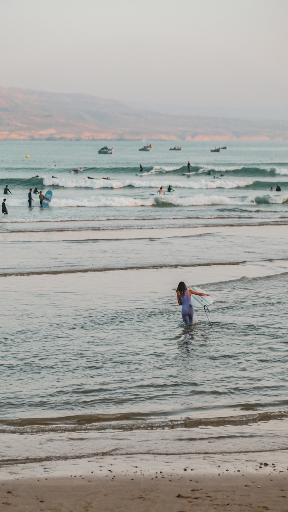
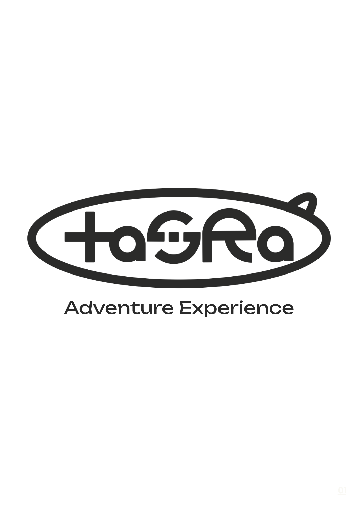
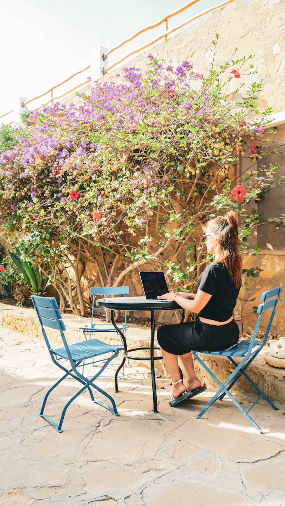
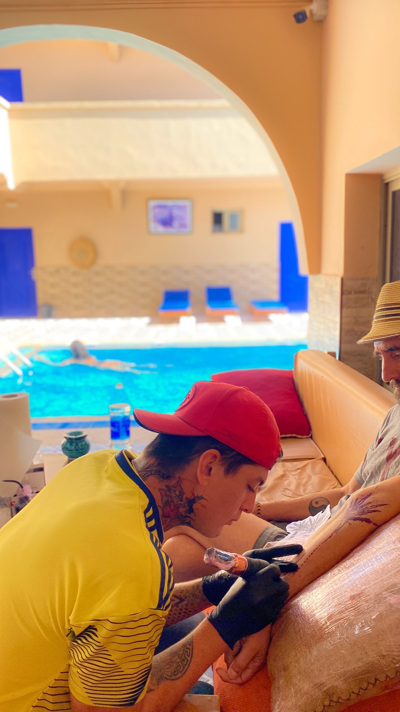
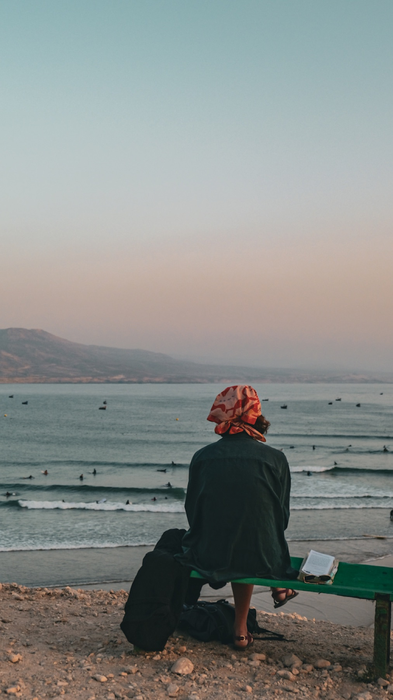
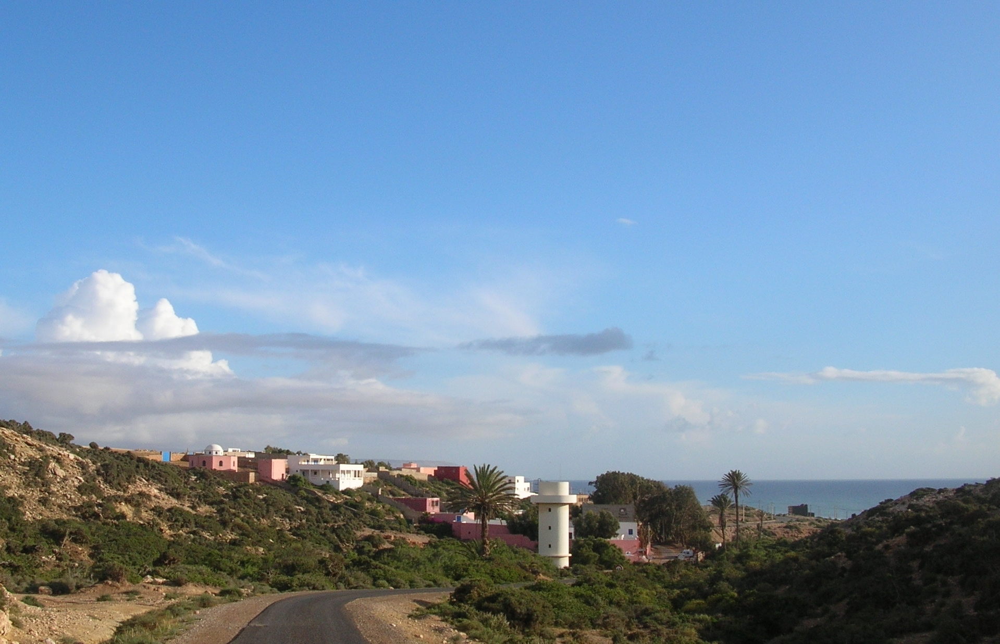

Universo narrativo
Surf Paradise como concepto rector: una manera de hablar del espacio, las personas, la cultura y el paisaje desde una misma lógica.


Dirección creativa · Estrategia · Storytelling · Contenido
Un sistema de comunicación para convertir un hostel de surf en una experiencia cultural, sensorial y comunitaria.
El desafío
En Tasra conviven surf, arte, gastronomía, cultura marroquí, historia, naturaleza y una comunidad internacional. El desafío fue ordenar esa riqueza sin convertirla en una lista de servicios.
La estrategia debía posicionar el espacio para nómadas digitales europeos y, al mismo tiempo, conservar su identidad local y su carácter auténtico.
“Life is good when you live in a paradise.”
El sistema
Surf Paradise como concepto rector: una manera de hablar del espacio, las personas, la cultura y el paisaje desde una misma lógica.
Surf, arte, nómadas digitales, hostel y gastronomía, experiencias locales, historia y The Sound of the Peacock.
La historia de Aziz, el origen de Tasra, la transformación del espacio y la fusión entre el Marruecos local y la estética surf californiana de los años setenta.
Contenido, propuestas web, talleres, encuentros culturales y alianzas pensados como partes del mismo ecosistema.




Resultados
Resultados orgánicos de Instagram entre el 1 de julio y el 31 de agosto de 2025. La comunicación amplió el alcance más allá de la comunidad existente.
¿Tu marca tiene mucho para decir pero todavía no forma un sistema?